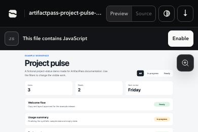
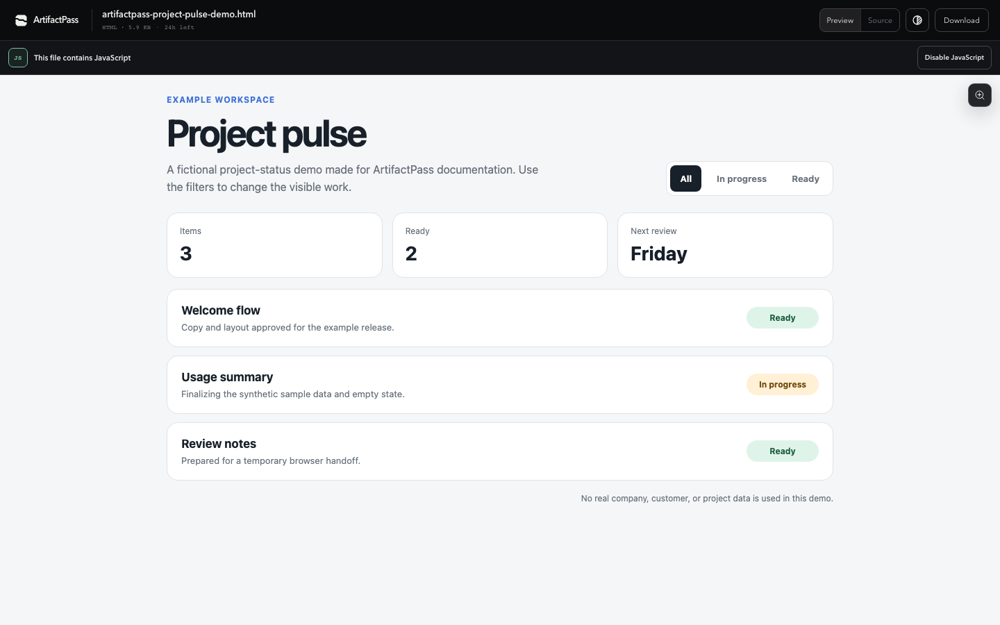
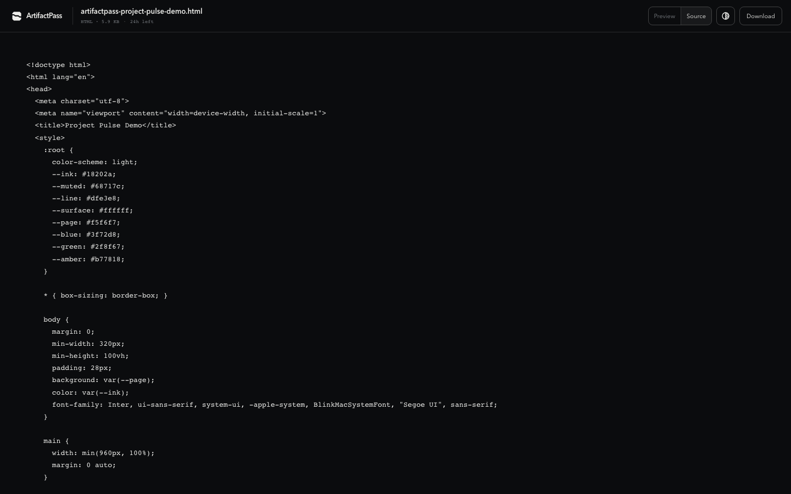

An HTML file may contain code. Opening a share link should not run that JavaScript before the recipient chooses to enable it.
JavaScript stays off until the recipient enables it
ArtifactPass opens the preview with JavaScript disabled and labels files that contain it. The recipient can read the static preview, inspect Source, download the exact file, or choose Enable JavaScript.

What enabling JavaScript actually does
The recipient's browser performs the computation. ArtifactPass serves the uploaded HTML as a separate response with restrictive browser headers, and the browser executes allowed client-side behavior inside the preview frame. ArtifactPass does not create a dedicated server process or hosted browser session for the demo.
That distinction matters. A chart animation or local calculator uses the recipient's CPU and memory. The ArtifactPass infrastructure still serves the artifact and viewer request, but it is not continuously computing the interface on the user's behalf.

| Question | Answer |
|---|---|
| Where does the JavaScript run? | Inside the recipient's browser. |
| Does ArtifactPass run it on a server? | No. The server delivers the preview document and artifact data. |
| Can it call the public internet? | No. Network access is blocked in the enabled preview. |
| Can it keep running after the tab closes? | No. Closing or navigating away ends that browser context. |
| Can the recipient stop it? | Yes. Use Disable JavaScript, close the tab, or navigate away from the artifact. |
The preview is isolated in layers
ArtifactPass does not rely on a single browser flag. It prepares a separate preview representation and combines content removal with browser-enforced boundaries.
Neutralized content
For the passive preview, scripts and executable embeds are removed. Navigation and external-resource attributes are stripped, refresh metadata is removed, forms and controls are disabled, and external CSS resources are removed.
Sandboxed frame
The preview runs inside an iframe with no broad permissions. The frame is intentionally separated from the ArtifactPass application page and its authenticated state.
Deny-by-default Content Security Policy
The preview receives a restrictive Content Security Policy. Network destinations are not opened for the uploaded code, so fetches, analytics, remote scripts, external fonts, and API requests cannot operate as they would on a normal hosted website.
Original source remains separate
The preview copy is not the durable artifact. Source view and download retain the exact uploaded bytes. This lets ArtifactPass make previewing safer without silently changing the file the creator shared.

How many previews can run at once?
ArtifactPass does not reserve application compute for each active JavaScript preview. The long-running work happens on each recipient's device, so there is no separate preview-concurrency pool that fills up as more people enable JavaScript.
Infrastructure usage still grows with normal traffic. Each viewer load reads metadata and artifact content through the Worker and storage layer. Bandwidth, Worker requests, D1 reads, and R2 operations are the relevant service limits. The animation loop or local interaction itself is not billed as server compute after the browser receives it.
A very large or computationally expensive script can still make the recipient's tab slow. The browser may throttle it, display an unresponsive-page warning, or terminate the tab. That cost lands on the viewer's device, which is another reason not to enable code from an untrusted source.
When should a recipient enable it?
Enable JavaScript when the sender is trusted and the interaction is necessary to review the artifact. A chart with filters, a small prototype, or a local calculator may need it. A static report often does not.
Before enabling, check the filename, sender, source, and purpose. If the artifact arrived unexpectedly, leave JavaScript disabled. If the source references remote services or secrets, do not assume the preview will make that design safe or functional.
For creators
- Keep the demo self-contained and avoid external dependencies.
- Explain what the interaction is expected to do.
- Use synthetic or non-sensitive sample data.
- Test the file without network access before sharing it.
- Choose the shortest lifetime that gives the reviewer enough time.
For recipients
- Leave JavaScript disabled when the static preview is enough.
- Inspect Source before running code from a sender you do not know well.
- Disable JavaScript or close the tab if the page behaves unexpectedly.
- Remember that downloading and opening the file elsewhere leaves the ArtifactPass preview boundary.
Common questions
Why not run JavaScript automatically?
Automatic execution would remove the recipient's choice and make opening a file perform active work without a clear signal.
Why keep Source and Download?
They make the handoff verifiable. The recipient can inspect the exact HTML and keep the original file instead of relying only on a transformed preview.
Can the preview access ArtifactPass sign-in cookies?
The sandboxed preview is separated from the application context and is not granted broad permissions to the parent page's authenticated state.
Does disabling JavaScript delete the artifact?
No. It only stops active code in the preview. The artifact remains available until its selected expiry.